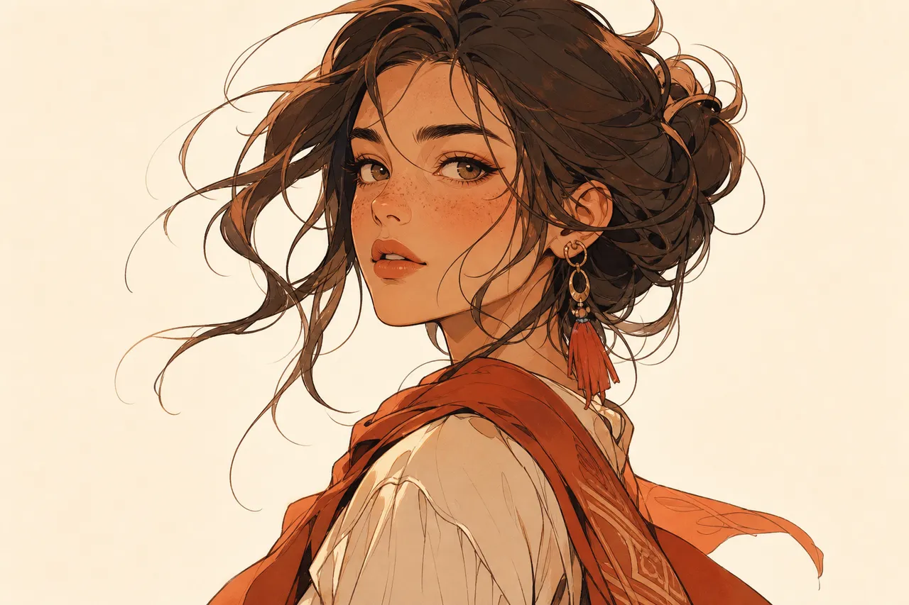

Turning a Still Photo Into a Speedpaint Drawing Video: Line Art, Color Fill and Timing

A speedpaint video turns a static image into a performance. Instead of scrolling past another flat JPEG, the viewer sees blank paper, the first structural pencil or marker lines, the gradual buildup of detail, and finally the wash of color that brings the subject to life. Recording that process manually on a tablet requires hours of drawing and screen capture. An AI speedpaint workflow reconstructs the two-stage reveal from a finished JPG or PNG in seconds.
How the two-phase drawing reveal works
A convincing drawing video never reveals an image from top to bottom like a scanner. Human artists establish outlines and proportions first, then shade and color. When you upload a photo to an AI drawing timelapse generator, the model decomposes the picture into two separate timing phases:
- The sketch phase. High-contrast edges, contours and facial or architectural lines are extracted and drawn stroke by stroke on the canvas.
- The color-fill phase. Once the linework is in place, color and tonal gradients flow into the regions until the frame matches the styled illustration.
Because the two durations are configured independently—each phase can run anywhere from a few seconds up to five minutes—you can create a pure black-and-white doodle video by setting the color phase to zero, or make a fast sketch intro that lingers on the colored painting.
Picking a source image that draws well
Not every photograph translates equally well into line art. The cleaner the separation between subject and background, the more satisfying the stroke order looks:
- Portraits, couples, pets and character art. Clear eyes, hair outlines and expressive poses give the sketch phase an unmistakable focal point within the first two seconds of playback.
- Architecture, landmarks and product shots. Straight perspective lines and distinct silhouettes read cleanly on a whiteboard, chalkboard or poster canvas.
- High contrast over heavy motion blur. A crisp JPG or PNG under the 10 MB upload limit produces sharp marker lines, whereas dark, noisy night shots force the line extractor to guess where edges belong.
- Uncluttered backgrounds. A busy crowd or tangled foliage behind your main subject adds hundreds of minor strokes before the viewer can tell what is being drawn.
Setting canvas ratio, hand style and duration
On SpeedPainter, the Speedpaint generator lets you keep the image's original proportions or lock the canvas to presets including 16:9, 9:16, 1:1, 4:5, 3:2, 2:3, 4:3, 3:4 and 21:9. You can also toggle a visible drawing hand—choosing either a right-handed or left-handed artist—or leave the strokes to appear on their own for a cleaner motion-graphics look.
For TikTok, Reels and YouTube Shorts, a 9:16 vertical canvas with a 6-to-10-second sketch phase and a 4-to-6-second color reveal hits the sweet spot: viewers immediately see the drawing hand moving, stay to guess the subject, and watch the final color pop before swiping. Free accounts export up to 1080p using the 60 one-time sign-up credits, while paid plans unlock crisp 4K renders for large displays and client deliverables.
Speedpaint timing reference
| Use case | Canvas ratio | Sketch phase | Color phase | Cost at 1 credit/sec |
|---|---|---|---|---|
| Vertical social hook (Reels / TikTok) | 9:16 | 7 s | 5 s | 12 credits |
| YouTube chapter intro or B-roll | 16:9 | 10 s | 8 s | 18 credits |
| Line-only whiteboard doodle | 16:9 or 1:1 | 15 s | 0 s | 15 credits |
| Detailed art timelapse showcase | Original or 4:5 | 30 s | 15 s | 45 credits |
Because Speedpaint bills a flat 1 credit per second of output video—and automatically refunds reserved credits if a task ever fails—you can test a short 10-second reveal first before rendering a longer showcase. If you are preparing a multi-part drawing series for a channel or classroom, keeping the sketch-to-color ratio consistent across episodes—for instance, two-thirds of the runtime on line art and one-third on color fill—gives your videos a recognizable rhythm while keeping credit usage predictable.